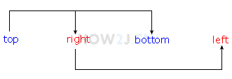

1、左内边距
无内边距的span
左边距为50的span
2、内边距，写1个和写4个的区别
padding:20px的span
padding:10px 20px 30px 40px的span
3、当内边距的值少于4个的时候
如果缺少左内边距的值，则使用右内边距的值。
如果缺少下内边距的值，则使用上内边距的值。
如果缺少右内边距的值，则使用上内边距的值。
举例说明
这是完整4个的
padding: 10 20 40 80
如果只有3个
padding: 10 20 40
那么left取right
padding: 10 20 40 = padding: 10 20 40 20
如果只有两个
padding: 10 20
那么bottom取top，left取right
padding: 10 20 = padding:10 20 10 20
如果只有一个
padding:10
那么right取top，bottom取top，left取top
padding:10 = padding:10 10 10 10
